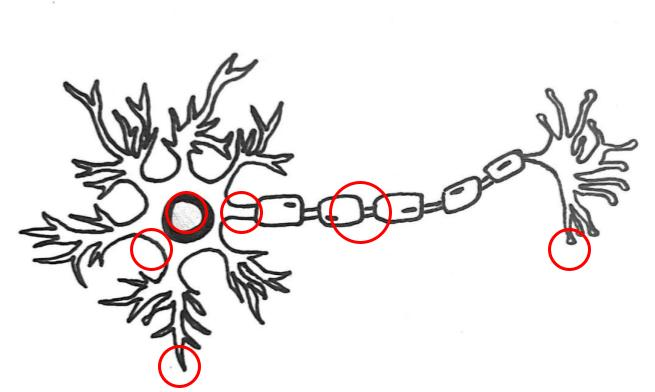

Click a red circle to learn more!
In a mature human brain, approximately 100 billion neurons are estimated to exist! Neurons are the primary cells making up the nervous system and have specialized structures allowing for electrical impulses to be transmitted and received rapidly across neuronal networks. The unique cell shape typically consists of dendrites, a cell body (soma), and an axon. Signals are received via the dendrites, processed in the soma, and transmitted across the axon and through axon terminals. Fun fact: unlike other cells, neurons do not go through mitosis—after maturing, neurons exit the cell cycle and no longer divide as their structure is vital for proper neural communication and function.